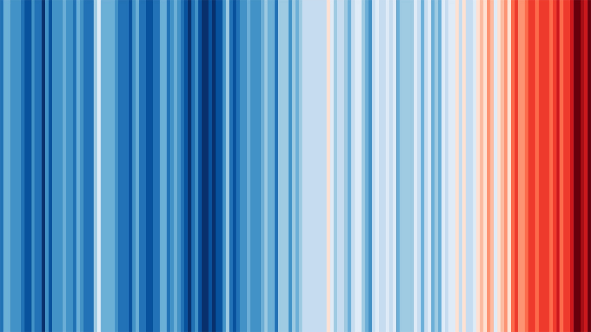
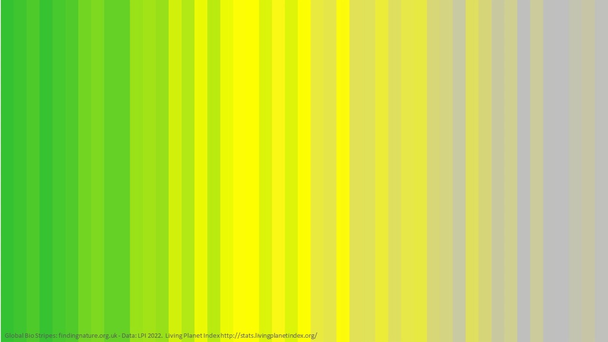

Warming Stripes
Mediante un proceso de abstracción, Hawkins (2018) transforma conjuntos de datos geofísicos complejos en una narrativa visual mínima basada en el color, logrando una síntesis que trasciende la barrera del lenguaje técnico para instalarse en la esfera de la percepción intuitiva.

Contexto y Problemática
El diseño de esta pieza resuelve la dificultad de comunicar el calentamiento global a audiencias no especializadas a la vez que responde a las interrogantes fundamentales del fenómeno: qué (anomalías de temperatura), quién (la biosfera global), dónde (escalas regionales y globales) y cuándo (desde 1850 hasta la actualidad).
Análisis de la Información
Entre la Estructura y la Construcción Social
Bajo el modelo DIKW (Data, Information, Knowledge, Wisdom), esta pieza opera más allá de la simple transmisión de datos:
Si bien son la base, la visualización prescinde de ser una Estructura de Interacción técnica —al eliminar ejes, escalas y valores numéricos— para situarse como una Construcción Social de la información.
El valor de las Warming Stripes reside en su capacidad de producir sentido y generar conciencia colectiva.
Es una representación que prioriza un mensaje claro y dirigido por sobre la exploración de datos exhaustiva, donde la transición de azules a rojos sintetiza el avance del calentamiento global.
Análisis Técnico y Ético-Legal
Desde una perspectiva técnica, la visualización opera como un gráfico de barras de color donde cada franja representa la desviación anual de temperatura respecto a un período de referencia.
En cuanto al tratamiento de datos, la pieza se ajusta a los estándares de seguridad y privacidad:
- Datos sensibles No utiliza ni compromete datos personales según la Ley 19.628, ya que su fuente son registros geofísicos de acceso público y carácter impersonal.
- Metadatos y sesgos La síntesis visual favorece la comunicación masiva, pero implica la omisión de zonas geográficas con escasa cobertura histórica de estaciones meteorológicas.
Legado y Aplicaciones Contemporáneas
Su legado reside en la simplificación extrema, permitiendo una comprensión inmediata e intuitiva de fenómenos de gran escala. Esta lógica visual ha sido adaptada en diversos contextos para visibilizar, por ejemplo, una crisis sistémica:
-
Biodiversity Stripes (2022)
Utiliza la misma gramática visual para representar la pérdida de biodiversidad global.

Cada franja representa la vida silvestre y su declive se traduce en una pérdida de vitalidad y colorido: el verde se torna gris. Fuente: Franjas Biológicas Globales 1970–2016 — Datos: Índice Planeta Vivo http://stats.livingplanetindex.org/